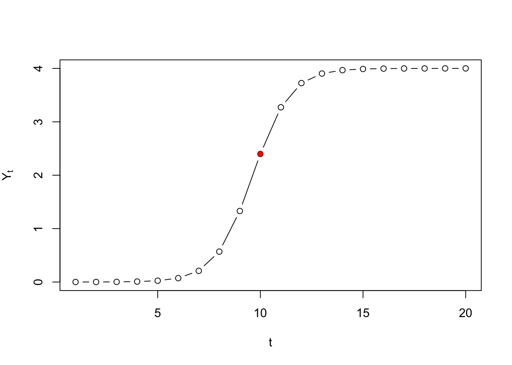
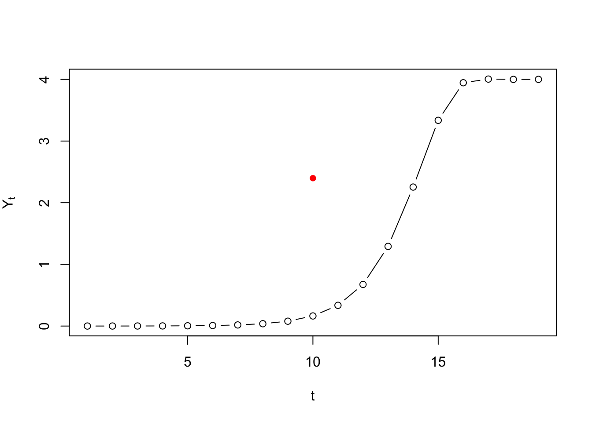

4.5 Numerical integration to simulate continuous time
In order to ‘solve’ a differential equation for continuous time using a method of numerical integration, one could code it like in the spreadsheet assignment below. For R and Matlab there are so-called solvers available, functions that will do the integration for you. For R look at the Examples in package deSolve.
Euler’s method and more…
The result of applying a method of numerical integration is called a numerical solution of the differential equation. The analytical solution is the equation which will give you a value of \(Y\) for any point in time, given an initial value \(Y_0\). Systems which have an analytical solution can be used to test the accuracy of numerical solutions.
Analytical solution
Remember that the analytical solution for the logistic equation is:
\[ Y(t) = \frac{K * Y_0}{Y_0 + \left(K - Y_0 \right) * e^{-r*t} } \] This can be ‘simplified’ to
\[ Y(t) = \frac{K}{1 + \left(\frac{K}{Y_0-1} \right) * e^{-r*t} } \]
If we want to know the growth level \(Y_t\) at \(t=10\), with \(Y_0=.0001\), \(r=1.1\) and \(K=4\), we can just fill it in:
# Define a function for the solution
logSol <- function(Y0, r, K, t){K/(1+(K/Y0-1)*exp(-r*t))}
# Call the function
logSol(Y0=.0001, r=1.1, K=4, t=10)## [1] 2.398008We can pass a vector of time points to create the exact solution, the same we would get if we were to iterate the differential/difference equation.
# Plot from t=1 to t=100
plot(logSol(Y0=.0001, r=1.1, K=4, t=seq(1,20)), type = "b",
ylab = expression(Y[t]), xlab = "t")
# Plot t=10 in red
points(10,logSol(Y0=.0001, r=1.1, K=4, t=10), col="red", pch=16)
Numerical solution (discrete)
If we would iterate the differential equation …
\[ \frac{dY}{dt} = Y_t * (1 + r - r * \frac{Y_t}{K}) \]
… as if it were a difference equation, we are not simulating continuous time, but a discrete time version of the model:
\[ Y_{i+1} = Y_i * (1 + r - r * \frac{Y_i}{K}) \]
logIter <- function(Y0,r,K,t){
N <- length(t)
Y <- as.numeric(c(Y0, rep(NA,N-2)))
sapply(seq_along(Y), function(t){ Y[[t+1]] <<- Y[t] * (1 + r - r * Y[t] / K)})
}
# Plot from t=1 to t=100
plot(logIter(Y0=.0001, r=1.1, K=4, t=seq(1,20)), type = "b",
ylab = expression(Y[t]), xlab = "t")
# Plot t=10 in red
points(10,logSol(Y0=.0001, r=1.1, K=4, t=10), col="red", pch=16)